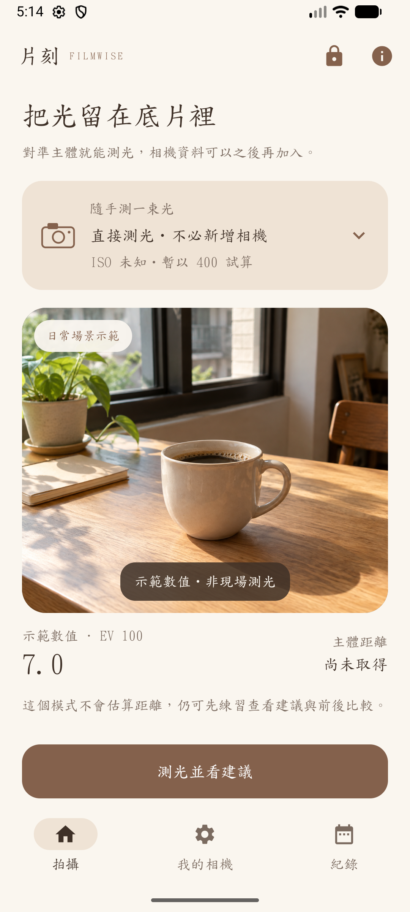
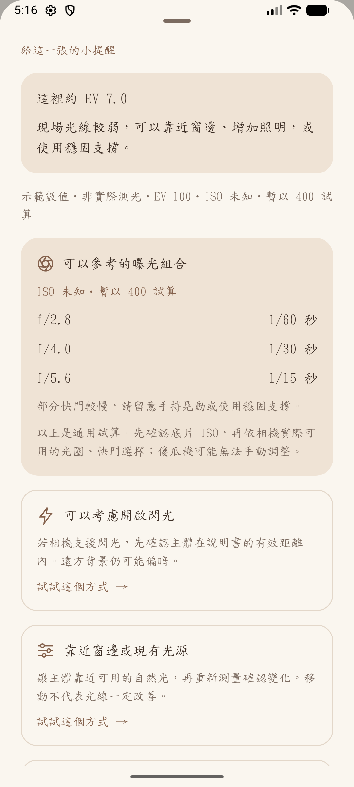
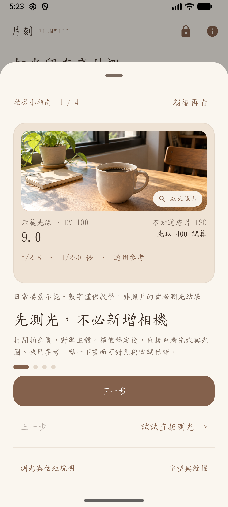

先看光，不必先設定。
直接測光模式不必先新增器材。讀取 EV 100，選擇試算 ISO，查看通用光圈與快門組合。
ANDROID APP / V0.4.0
曝光參考、ISO 換算與拍攝建議。
支援直接測光、多相機設定與前後比較。

THE IDEA / 為什麼做這個 App
當相機資料不齊全，或還不熟悉底片曝光，Filmwise 從「現在的光線」開始。先理解現場、取得通用曝光參考，再依相機能力選擇拍法，讓下一步更清楚。
直接測光模式不必先新增器材。讀取 EV 100，選擇試算 ISO，查看通用光圈與快門組合。
多台相機各自保存底片、規格與可用刻度。未知資訊保留未知，不把通用試算當成相機的真實設定。
依情境考慮移動位置、增加光線或調整曝光，再次測量並保存前後比較。設定與紀錄留在本機。
02 / PLAY WITH EXPOSURE
拖曳光線數值，切換 ISO。看看同樣的曝光，能如何搭配光圈與快門。
網頁曝光公式試算，使用手動設定的示範數值，並非相機即時測光。實際 App 會再依器材可用刻度提供建議。
0.4.0 實際 App 示範畫面


04 / BEHIND THE EXPERIENCE
進入背景、教學與隱私視窗時暫停相機；不保存相機畫面。提供本機資料清除與選用 AR 同意管理。
將曝光與距離判斷拆為核心邏輯，搭配獨立 QA 套件及模擬器驗證；檢查未知規格、相機切換、輸入與資料刪除等情境。
手機自動曝光提供拍攝參考，不能視為經校準的專業點測光表。AR 估距依裝置支援與現場條件；實機測光、測距精度仍需對照驗證。
FILMWISE / DOWNLOAD
Android 8.0 以上。既有正式版請沿用正式版更新；debug 測試版與正式版簽章不同。
檔案 SHA-256 驗證碼 ↗